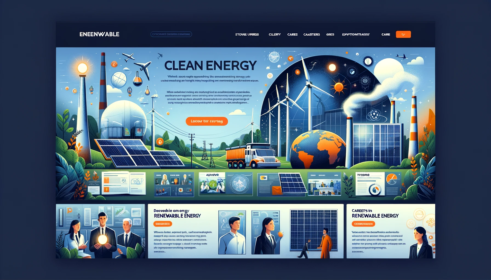

Climate Change Awareness and Action
This website can serve as an educational and action-oriented platform on climate change. It could include interactive sections explaining the science behind climate change, its impacts on different regions of the world, and personal stories from people affected by climate events. A key feature could be an interactive carbon footprint calculator and a section dedicated to suggesting practical steps individuals and communities can take to reduce their carbon footprint.
Local History and Cultural Heritage
This project could focus on the history and cultural heritage of a specific area, town, or community. The website can feature historical timelines, interviews with local historians, stories from older residents, and archival photographs. It could also include virtual tours of historical landmarks and explanations of local traditions and festivals, thus preserving and showcasing the area's rich heritage.
Mental Health Awareness for Students

Aimed at addressing the mental health challenges faced by students, this website can provide resources, tips, and personal narratives about dealing with mental health issues. Features could include a blog section for students to share their stories, a directory of professional mental health resources, self-help guides, and interactive tools like stress-relief exercises or meditation guides.
Innovations in Renewable Energy

This topic focuses on the latest developments in renewable energy. The website could include sections on different types of renewable energy (solar, wind, hydro, etc.), interviews with experts in the field, and case studies of successful renewable energy projects. Additionally, it could feature an interactive map showing renewable energy usage around the world and a section on careers in the renewable energy sector.
Food Sustainability and Local Farming
This website would explore the world of sustainable farming and locally sourced food. It could feature profiles of local farmers, information on sustainable farming practices, and tips on how consumers can make more sustainable food choices. Interactive elements might include a seasonal produce calendar, recipes using local ingredients, and a map of local farmers' markets and sustainable restaurants.